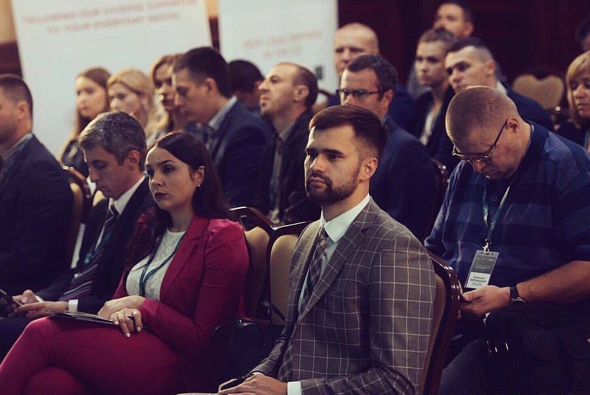

Не секрет, что введение новой профессии частного исполнителя - один из важнейших этапов судовой реформы в Украине.
Ярким подтверждением этого стал повышенный интерес к международной конференции "Становление и функционирование системы частного исполнения судовых решений", которая состоялась сегодня. Уверен, равнение на европейский опыт и полученные практические советы поспособствуют продуктивному старту новой деятельности.
Добавлена: Пн, 30 Мар. 2018 г.Просмотры: 48
Тема
30 марта 2018 года Министерство юстиции Украины совместно с Ассоциацией частных исполнителей Украины и Киевским национальным университетом имени Тараса Шевченко, при поддержке Программы Агентства США по международному развитию (USAID) «Новое правосудие», Проэкта Европейского Союза «Поддержка реформ юстиции и правосудия в Украине (ПРАВО-JUSTICE)» и Центра комерческого права (Украина), провели научно-практическую конференцию «Реформа исполнительного производства: настоящее и перспективы». Все оговариваемые спикерами темы были важными и актуальными. Квалификация частных исполнителей растет каждый день!
.

Добавлена: Пт, 27. Янв 2018 годаПросмотры: 43
Тема
Реформа о частных исполнителях в Украине успешно внедряется в практику и оттачивается день ото дня. В частности, за счет регулярной проработки устранения возникающих сложностей.
Отличным поводом для этого стал II-й Международный форум, посвященный теме исполнительного производства. Результаты проделанной колоссальной командной работы - лучшие доказательства эффективности нововведения.
Добавлена: Пт, 27. Янв 2018 годаПерегляди: 41
Тема
Центр коммерческого права совместно с Министерством юстиции провел семинар для частных исполнителей, во время которого обсуждались вопросы отладки и оптимизации рабочего процесса частных исполнителей. Семинар вели специалист по делопроизводству из Министерства юстиции, эксперт по налогообложению и HR-консультант.
Все затронутые спикерами темы были важны и актуальны. Квалификация частных исполнителей растет изо дня в день
.